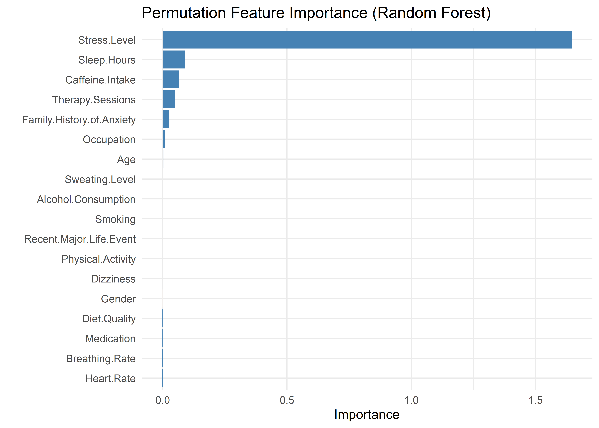
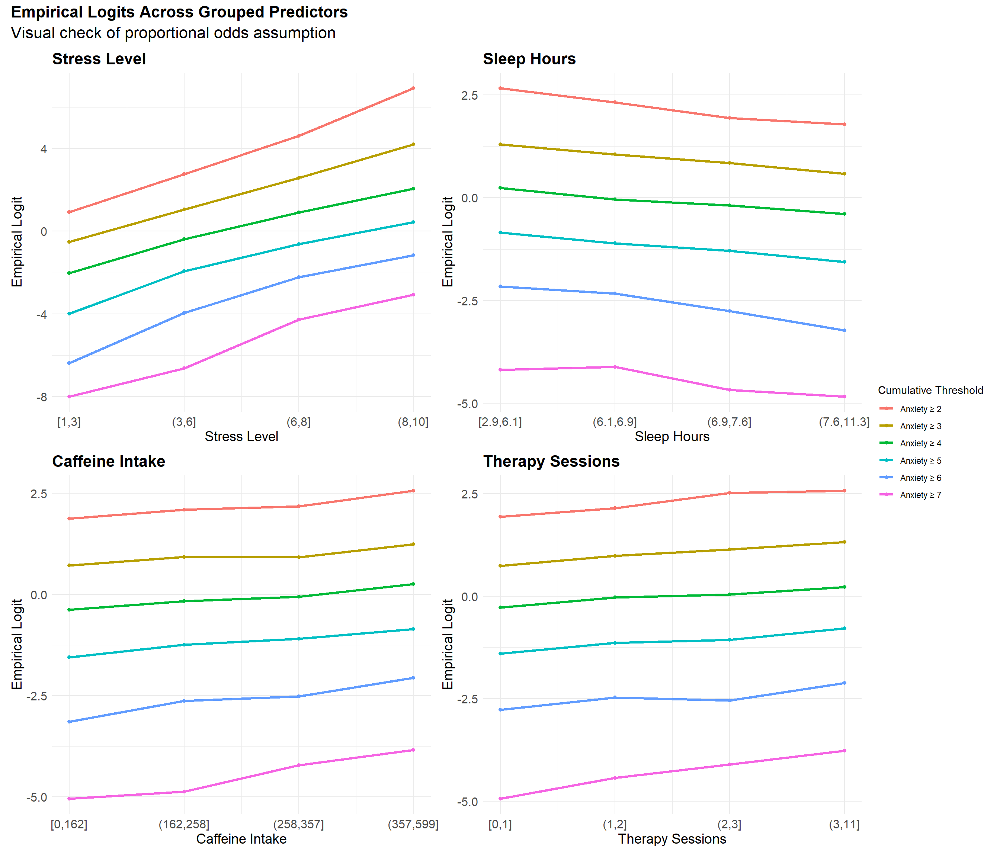
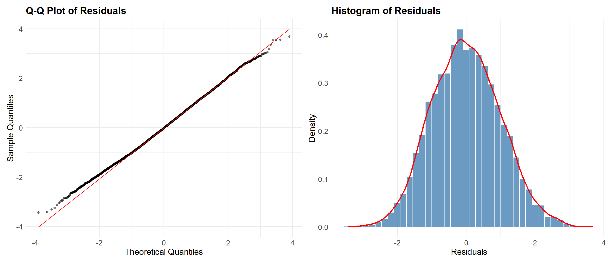
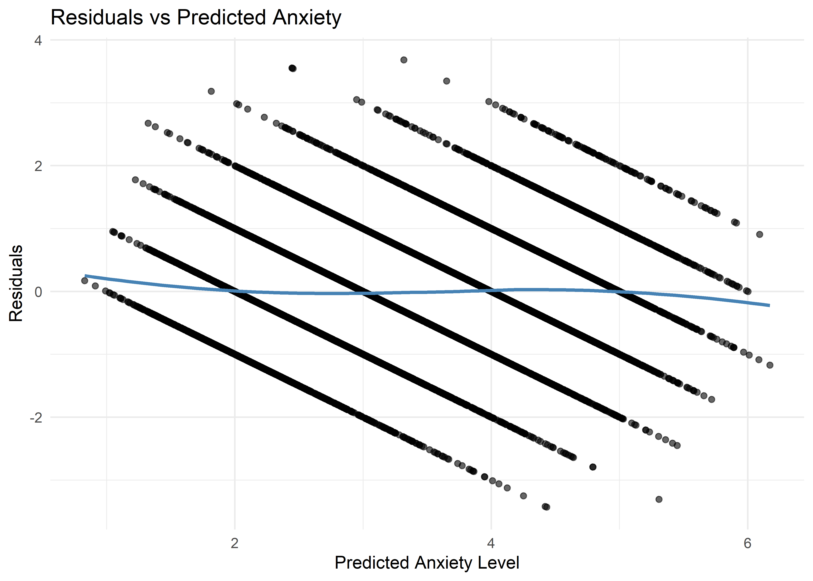
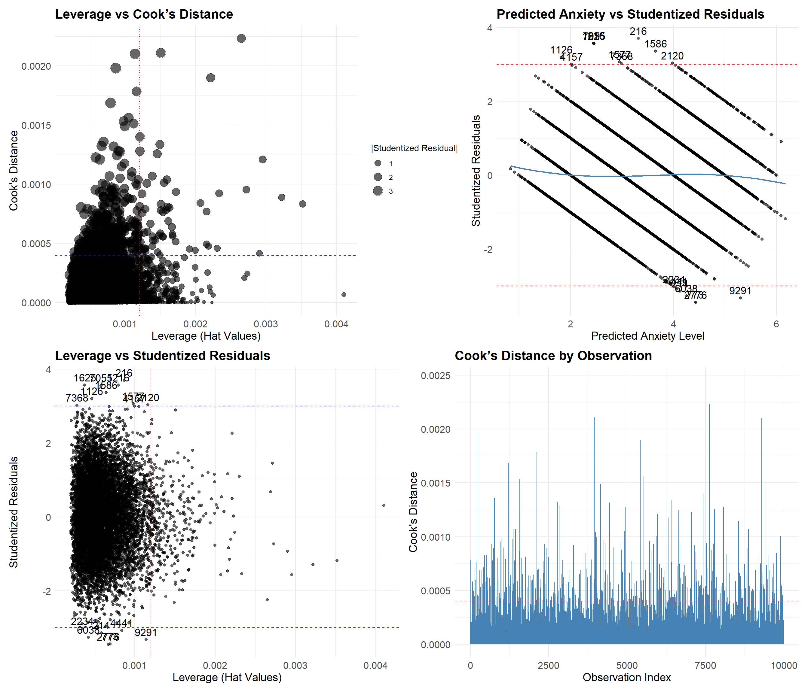
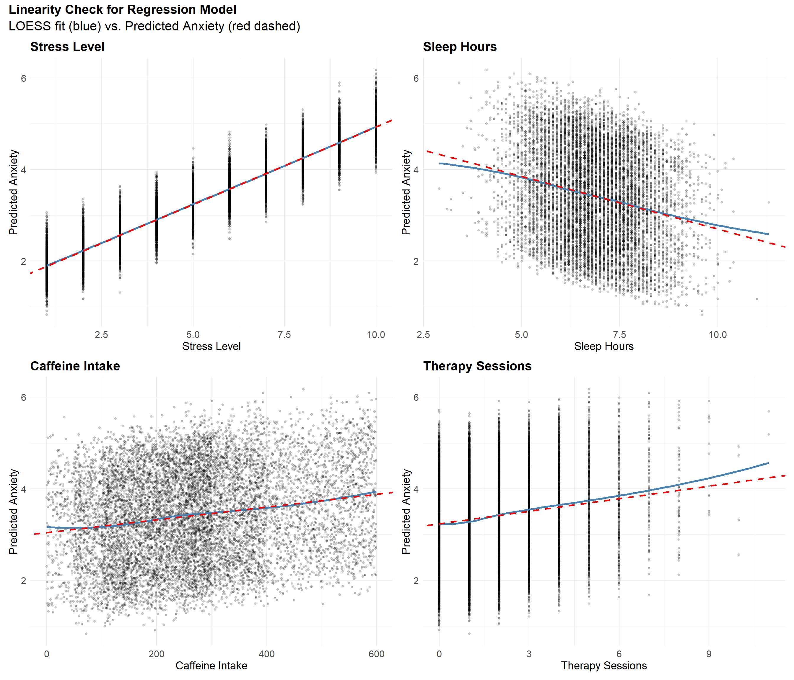
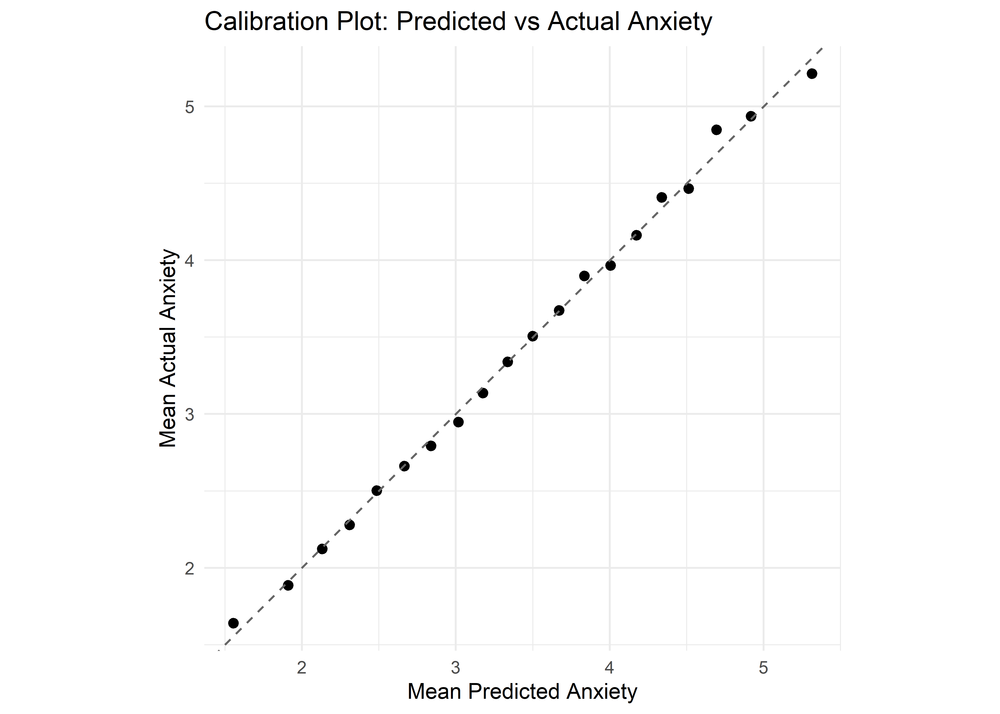
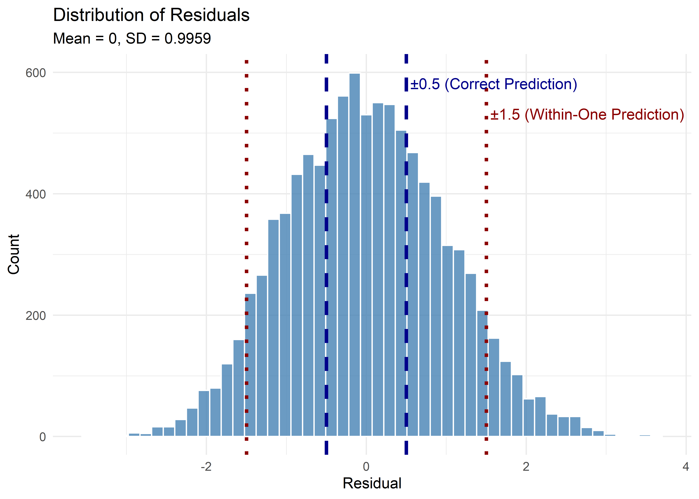

Predicting across Low / Moderate Axniety Levels
Overview
Exploratory plots revealed a strong relationship between Anxiety Level and Stress Level, providing early confidence in predictive modeling. However, before proceeding, we must consider the nature of our outcome variable. Anxiety Level is numerical, but ordinal—it has a meaningful order, but not necessarily equal spacing between categories. This complicates model selection, as linear regression assumes a continuous and unbounded outcome, where equal differences between values carry consistent meaning.
We consider two main modeling approaches:
Linear regression with rounding, which is easy to interpret but not designed for ordinal data.
Ordinal logistic regression (also known as the proportional odds model), which more accurately reflects the structure of the outcome but is harder to interpret clearly.
Alternative ordinal modeling frameworks (e.g., partial proportional odds) were not explored, as they were beyond the scope of this analysis.
Although ordinal logistic regression is more appropriate in theory, its interpretation can be opaque—especially for non-technical audiences. Linear regression, while a simplification, provides direct and intuitive estimates, making it better suited to our goals, which prioritize interpretability and transparency over statistical precision.
That said, we evaluate both models empirically before committing to one. Our first step is to determine which predictors to include. To guide this selection, we use permutation-based variable importance from a random forest model. The resulting plot highlights Stress Level as the most important feature. A noticeable elbow point in the importance scores—specifically between Family History of Anxiety and Occupation—provides a natural cutoff. Based on this, we include the following predictors: Stress Level, Sleep Hours, Caffeine Intake, Therapy Sessions, and Family History of Anxiety.
Ordinal Logistic Model
First, we fit the ordinal logistic regression model. The results show a clear pattern: all predictors are directionally consistent with expectations. Stress Level, Caffeine Intake, Therapy Sessions, and Family History of Anxiety are positively associated with higher anxiety levels. In contrast, Sleep Hours has a negative association—more sleep corresponds to lower anxiety.
Call:
polr(formula = ordered(Anxiety.Level) ~ Stress.Level + Sleep.Hours +
Caffeine.Intake + Therapy.Sessions + Family.History.of.Anxiety,
data = model_data, Hess = TRUE)
Coefficients:
Value Std. Error t value
Stress.Level 0.608213 0.0085380 71.236
Sleep.Hours -0.421707 0.0177904 -23.704
Caffeine.Intake 0.002571 0.0001345 19.119
Therapy.Sessions 0.167046 0.0129053 12.944
Family.History.of.AnxietyYes 0.205308 0.0449721 4.565
Intercepts:
Value Std. Error t value
1|2 -1.6484 0.1351 -12.1995
2|3 0.0611 0.1328 0.4597
3|4 1.7495 0.1345 13.0033
4|5 3.4915 0.1382 25.2554
5|6 5.3197 0.1436 37.0440
6|7 7.3847 0.1664 44.3791
Residual Deviance: 27852.94
AIC: 27874.94 The confusion matrix below shows that the model performs modestly but meaningfully better than chance in predicting anxiety levels. The overall accuracy is 0.383—well above the naïve baseline of approximately 1/7 (~14%) for a seven-class classification task. This performance is consistent with the challenges of modeling subjective human responses, where perfect classification is unlikely due to inherent noise and ambiguity.
Encouragingly, for most predicted classes, the most common true label is the correct one, and 86.41% of predictions fall within one level of the actual value. This indicates that while the model may struggle with fine-grained distinctions, it captures the broader structure of the outcome effectively.
One notable limitation is the model’s complete failure to predict Anxiety Level 7—the rarest category, with only 123 cases out of 9,986. This likely reflects both class imbalance and the ordinal model’s tendency to shrink predictions toward the center of the scale. Potential remedies include reweighting, resampling, or alternative modeling strategies that better account for the tails of the distribution.
Confusion Matrix and Statistics
Reference
Prediction 1 2 3 4 5 6 7
1 332 205 87 17 1 0 0
2 484 661 509 154 22 3 0
3 198 682 995 639 187 22 1
4 25 193 659 1107 686 158 23
5 0 15 156 485 681 385 80
6 0 0 1 14 52 48 19
7 0 0 0 0 0 0 0
Overall Statistics
Accuracy : 0.3829
95% CI : (0.3734, 0.3926)
No Information Rate : 0.2419
P-Value [Acc > NIR] : < 2.2e-16
Kappa : 0.2247
Mcnemar's Test P-Value : NA
Proportion of cases predicted within one level of the true level 0.8641Lightweight Diagnostics
We formally tested the proportional odds assumption using the Brant test. The omnibus test was significant, indicating that the assumption does not hold strictly. At the individual level, Stress Level, Sleep Hours, and Caffeine Intake also showed statistically significant violations.
However, visual inspection of the empirical cumulative logits for each predictor revealed near-parallel trends across thresholds, broadly consistent with the proportional odds framework. A slight divergence in slope between the Anxiety ≥ 2 and Anxiety ≥ 3 thresholds is visible—particularly for Stress Level—suggesting mild non-proportionality at the lower end of the anxiety scale. Additionally, the slope for Anxiety ≥ 7 behaves somewhat erratically, likely due to extreme class imbalance at the highest anxiety level.
Taken together, these results suggest that while the proportional odds assumption is not strictly met, the observed deviations appear minor and not practically consequential. An ordinal logistic model, while not ideal for interpretability, remains an adequate modeling choice for capturing the relationship between predictors and ordinal anxiety levels.
------------------------------------------------------------
Test for X2 df probability
------------------------------------------------------------
Omnibus 50.1 25 0
Stress.Level 14.11 5 0.01
Sleep.Hours 9.71 5 0.08
Caffeine.Intake 17.07 5 0
Therapy.Sessions 1.77 5 0.88
Family.History.of.AnxietyYes 4.26 5 0.51
------------------------------------------------------------
H0: Parallel Regression Assumption holds
Linear Regression
We next examine the linear regression model. Its results closely mirror those of the ordinal model: Sleep Hours shows a negative association with Anxiety Level, while Stress Level, Caffeine Intake, Therapy Sessions, and Family History of Anxiety all exhibit positive associations. The model’s \(R^2\) of 0.519 suggests moderate predictive power—consistent with the classification accuracy observed earlier. This alignment indicates that, despite its misspecification, the linear regression model effectively captures the main structure of the data.
Call:
lm(formula = Anxiety.Level ~ Stress.Level + Sleep.Hours + Caffeine.Intake +
Therapy.Sessions + Family.History.of.Anxiety, data = model_data)
Residuals:
Min 1Q Median 3Q Max
-3.4311 -0.7081 -0.0281 0.6776 3.6825
Coefficients:
Estimate Std. Error t value Pr(>|t|)
(Intercept) 2.503e+00 7.171e-02 34.899 < 2e-16 ***
Stress.Level 3.385e-01 3.476e-03 97.379 < 2e-16 ***
Sleep.Hours -2.296e-01 9.412e-03 -24.399 < 2e-16 ***
Caffeine.Intake 1.399e-03 7.171e-05 19.502 < 2e-16 ***
Therapy.Sessions 9.145e-02 6.957e-03 13.145 < 2e-16 ***
Family.History.of.AnxietyYes 1.156e-01 2.437e-02 4.743 2.14e-06 ***
---
Signif. codes: 0 '***' 0.001 '**' 0.01 '*' 0.05 '.' 0.1 ' ' 1
Residual standard error: 0.9962 on 9980 degrees of freedom
Multiple R-squared: 0.5194, Adjusted R-squared: 0.5191
F-statistic: 2157 on 5 and 9980 DF, p-value: < 2.2e-16The confusion matrix below also tells a similar story. The linear regression model achieves an accuracy of 0.376, closely matching the ordinal model. Once again, the most frequent prediction for each true level is typically the correct one, no observations are predicted as an Anxiety Level of 7, and 87.27% of predictions fall within one level of the true value. Taken together, these results suggest that both models perform comparably.
Confusion Matrix and Statistics
Reference
Prediction 1 2 3 4 5 6 7
1 105 52 14 4 0 0 0
2 687 755 520 146 15 3 0
3 222 749 1070 687 202 23 1
4 25 189 672 1133 725 169 27
5 0 11 131 437 657 384 80
6 0 0 0 9 30 37 15
7 0 0 0 0 0 0 0
Overall Statistics
Accuracy : 0.3762
95% CI : (0.3667, 0.3858)
No Information Rate : 0.2419
P-Value [Acc > NIR] : < 2.2e-16
Kappa : 0.2103
Mcnemar's Test P-Value : NA
Cases predicted within one level of the true level: 87.27%However, where the linear regression model differs most from the ordinal logistic model is in its treatment of the extremes. The linear regression model severely underpredicts Classes 1 and 6. For instance, among cases truly labeled as 1, more are predicted as 3 than as 1; for true sixes, the model more frequently predicts a 4 than a 6. This reflects a well-known property of linear regression: a tendency to regress toward the mean.
While alternative approaches such as weighted regression can reduce this issue, they do so by distorting the underlying data distribution or sacrificing interpretability—both of which conflict with our modeling goals. The ordinal logistic model also exhibits this bias, but to a lesser extent, owing to its structure that better respects ordinal spacing.
Comparing Interpretability: Linear vs. Ordinal
Although the ordinal logistic model is statistically well-suited to ordered outcomes, its coefficients are often harder to interpret in practical terms. For example, the model estimates that:
Each additional hour of sleep reduces the log-odds of reporting a higher anxiety level by 0.52.
While this may be meaningful to a statistician, log-odds are abstract and unintuitive for most readers. Even when translated into odds ratios—about a 40% reduction in the odds of being in a higher anxiety category—the interpretation remains ambiguous. What does “higher category” mean in practice? And how much higher?
Moreover, the phrase “reporting a higher anxiety level” is conceptually fuzzy for those unfamiliar with ordinal logistic regression—it doesn’t map cleanly onto expected values or real-number outcomes.
By contrast, the linear model produces a more direct and accessible statement:
Each additional hour of sleep is associated with a 0.23-point decrease in expected anxiety level.
This clear mapping from input units to outcome makes the results more tangible—especially for non-technical audiences. The ability to express predictor effects in everyday terms was a key reason for ultimately favoring the linear model in this analysis, despite its formal misspecification and its limited reliability at the edges of the scale. As we’ll explore later, the predictions themselves are inherently fuzzy, further supporting our emphasis on interpretability over classification precision. In addition, by modeling high-anxiety individuals (levels 8–10) separately, we avoid the primary predictive risk—misclassifying the people most in need of identification—and allow the linear model to focus on the more stable patterns within the moderate anxiety range.
Model Selection
Now that we’ve selected linear regression as our preferred model—prioritizing parsimony and interpretability—we begin with a baseline that includes Stress Level, Sleep Hours, Caffeine Intake, Therapy Sessions, and Family History of Anxiety, based on prior feature importance analysis.
Next, we assess whether any of these variables should be removed or if others should be added.
Removing Variables
To evaluate whether each predictor meaningfully contributes to the model, we compare BIC and Bayes Factor values after individually dropping each one.
The results below suggest that Stress Level is indispensable (as expected), with a BIC increase of nearly 7,000 when removed. Sleep Hours, Caffeine Intake, and Therapy Sessions also show strong support for inclusion based on substantial BIC increases and Bayes Factors.
Family History of Anxiety presents weaker evidence, but the change is still large enough to justify its retention under the principle of parsimony—each variable adds unique explanatory value without unnecessarily inflating model complexity.
Stress Level: aic bic bayes.factor p rsq adj.rsq
simplified_model 34938.68 34981.93 0 <2e-16 0.063 0.062
linear_model 28270.88 28321.34 Inf 0.519 0.519Sleep Hours: aic bic bayes.factor p rsq adj.rsq
simplified_model 28847.44 28890.69 0.000000e+00 <2e-16 0.491 0.490
linear_model 28270.88 28321.34 4.293248e+123 0.519 0.519Caffeine Intake: aic bic bayes.factor p rsq adj.rsq
simplified_model 28642.38 28685.64 0.000000e+00 <2e-16 0.501 0.501
linear_model 28270.88 28321.34 1.274688e+79 0.519 0.519Therapy Sessions: aic bic bayes.factor p rsq adj.rsq
simplified_model 28440.29 28483.54 0.000000e+00 <2e-16 0.511 0.511
linear_model 28270.88 28321.34 1.665933e+35 0.519 0.519Family History of Anxiety: aic bic bayes.factor p rsq adj.rsq
simplified_model 28291.36 28334.62 0.001 <2e-16 0.518 0.518
linear_model 28270.88 28321.34 762.941 0.519 0.519Adding Variables
To test whether the model could benefit from an additional predictor, we examine the next-highest ranked variable from the feature importance analysis: Occupation.
Adding Occupation results in a higher BIC and a Bayes Factor favoring the original model, indicating that its inclusion does not improve model fit enough to justify the added complexity. This supports our earlier decision to treat Occupation as beyond the importance elbow point.
Given this result, we retain the original model as our final specification for this analysis.
aic bic bayes.factor p rsq adj.rsq
linear_model 28270.88 28321.34 4.912824e+21 0.563 0.519 0.519
occupation_added 28284.27 28421.24 0.000000e+00 0.520 0.519Model Diagnostics
With our model selected, we now assess its diagnostics to ensure the assumptions of linear regression are reasonably satisfied and that the results are stable and interpretable. This section is organized around four diagnostic pillars:
- Error distribution checks, including assessments of normality and homoskedasticity. While formal inference is not our focus, these checks help us understand residual behavior and identify potential misspecification.
- Outlier analysis, which helps detect individual observations with high influence or poor fit that may distort coefficient estimates.
- Structural assumption checks, covering linearity, additivity (no interaction terms), and multicollinearity, to confirm that the model’s functional form is appropriate for the data.
- Calibration assessment, which ensures that predicted values align with observed responses and reflect meaningful expected outcomes.
Normality of Errors
The Q-Q plot shows slight “S-bending” near the tails, indicating mild deviations from perfect normality—likely due to applying linear regression to a bounded ordinal outcome. However, the residuals remain approximately symmetric, with no significant skewness or heavy tails.
Warning: The dot-dot notation (`..density..`) was deprecated in ggplot2 3.4.0.
ℹ Please use `after_stat(density)` instead.
Homoskedasticity of Errors
Due to the discrete and bounded nature of the outcome, the residual plot displays clear banding patterns—an expected artifact of applying linear regression to ordinal data. Nevertheless, the LOESS smoother remains essentially flat, indicating no substantial heteroskedasticity.
`geom_smooth()` using formula = 'y ~ x'
Outlier Detection
To explore this possibility, we’re using the same plots as in the logistic model (with the appropriate changes)
The four plots include:
Leverage vs. Cook’s Distance
Predicted Anxiety vs. Studentized Residuals
Leverage vs. Studentized Residuals
Cook’s Distance by Observation Index

Most observations appear well behaved, with no evidence of influential outliers. Cook’s distances are uniformly low (maximum < 0.003), indicating no individual point exerts undue influence on the model’s estimates. A small number of observations exceed the ±3 threshold for studentized residuals, which is expected in a dataset of this size. These high-residual points generally have low leverage and do not coincide with extreme influence measures.
The absence of high-leverage, high-residual combinations, combined with the overall stability of influence metrics, suggests that the model is not disproportionately shaped by any small subset of observations. While residual banding is present due to the ordinal nature of the outcome, it does not raise concern about outlier-driven distortion.
A few observations did exhibit either larger residuals or higher-than-average leverage, but none met criteria for being both poorly predicted and highly influential. These points were retained, as they are consistent with the expected variability in the data and do not materially affect model fit.
Linearity
Since linearity concerns only numerical predictors, there is no need to assess this assumption for categorical variables such as Family History of Anxiety. For the remaining continuous predictors, plots of each variable against predicted anxiety show strong linear trends. Although slight deviations appear in the tails—particularly at extreme values—these are minor and do not suggest meaningful nonlinearity.

Additivity
A likelihood ratio test showed no evidence that including interaction terms improves model fit (p = 0.84), suggesting that additivity is a reasonable working assumption for this analysis. While interactions could exist, their effects appear negligible in this context.
Analysis of Variance Table
Model 1: Anxiety.Level ~ Stress.Level + Sleep.Hours + Caffeine.Intake +
Therapy.Sessions + Family.History.of.Anxiety
Model 2: Anxiety.Level ~ (Stress.Level + Sleep.Hours + Caffeine.Intake +
Therapy.Sessions + Family.History.of.Anxiety)^2
Res.Df RSS Df Sum of Sq Pr(>Chi)
1 9980 9904.2
2 9970 9898.5 10 5.6562 0.84No Multicollinearity
All predictors in the model have variance inflation factors (VIFs) below 1.5—well below the commonly used threshold of 5. This suggests that multicollinearity is not a concern and that the predictors are sufficiently independent to yield stable, interpretable coefficients.
Variance Inflation Factors: Stress.Level Sleep.Hours Caffeine.Intake
1.000231 1.001329 1.000781
Therapy.Sessions Family.History.of.Anxiety
1.493893 1.493447 Model Calibration
Because our goal is interpretation, it’s essential to verify that the model’s predicted values are meaningful representations of expected outcomes. A predicted Anxiety Level of 5.4, while not an actual possible score, reflects the expected value for someone with those characteristics. For the predicted values to be interpretable, the model must be well-calibrated—that is, predictions should closely align with the average observed outcomes.
To assess calibration, we compared the model’s predictions to the actual mean Anxiety Levels within quantile-based bins of predicted values. The resulting calibration plot shows a near-perfect alignment along the identity line, suggesting that the model’s predictions closely approximate average observed outcomes across the range of predicted values. This supports the claim that the linear regression model provides reliable and interpretable estimates across the full range of predictions

Final Model Summary
Despite the model’s intentional misspecification—applying linear regression to a bounded ordinal outcome—diagnostics suggest that all key assumptions are reasonably satisfied. Residuals are approximately normal and homoskedastic. No influential outliers are present, and both linearity and additivity hold for the numeric predictors. Multicollinearity is negligible.. Taken together, these results indicate that the model is stable and interpretable, and that the tradeoff in favor of simplicity has not compromised its validity for exploratory or communicative purposes.
From Regression to Classification
To convert the linear regression model’s continuous predictions into discrete classes, we apply simple rounding. While this may reduce predictive precision, it avoids the added complexity of optimizing thresholds—especially since such methods often bias results toward the majority class in boundary regions.
Classification Performance
Although we previously reviewed classification performance in the overview section, we briefly revisit the results here for context.
The linear regression model achieves an accuracy of 0.376, closely matching the ordinal model. Once again, the most frequent prediction for each true level is typically the correct one, no observations are predicted as an Anxiety Level of 7, and 87.27% of predictions fall within one level of the true value.
Confusion Matrix and Statistics
Reference
Prediction 1 2 3 4 5 6 7
1 105 52 14 4 0 0 0
2 687 755 520 146 15 3 0
3 222 749 1070 687 202 23 1
4 25 189 672 1133 725 169 27
5 0 11 131 437 657 384 80
6 0 0 0 9 30 37 15
7 0 0 0 0 0 0 0
Overall Statistics
Accuracy : 0.3762
95% CI : (0.3667, 0.3858)
No Information Rate : 0.2419
P-Value [Acc > NIR] : < 2.2e-16
Kappa : 0.2103
Mcnemar's Test P-Value : NA
Proportion of cases predicted within one level of the true level 0.8727Now that we’ve revisited the results, let’s take a closer look at the within-one accuracy metric. At first glance, this may seem like an overly generous statistic. However, it’s important to recognize that humans tend to struggle to reliably distinguish between adjacent levels on fine-grained ordinal scales—especially when the number of levels exceeds 7.
“Humans have difficulty reliably distinguishing between more than 5 to 7 categories on a rating scale, with reliability and interpretability decreasing as the number of levels increases.” — Miller, G. A. (1956). “The Magical Number Seven, Plus or Minus Two: Some Limits on Our Capacity for Processing Information.” Psychological Review, 63(2), 81–97.
Although our model is trained on a 1–7 scale, the original data was recorded on a 1–10 scale, likely introducing subjective noise and imprecision in how respondents rated themselves. In this context, a within-one accuracy of 87% better captures the model’s practical performance than strict classification accuracy.
That said, this metric is indeed optimistic, and we acknowledge its limitations. Still, given the inherent ambiguity in human-rated scales, within-one accuracy offers a more forgiving and arguably more realistic view of model effectiveness.
Probabilistic Framing
Moreover, from the diagnostics we know that the errors roughly follow a normal distribution. Actually, they roughly follow a standard normal distribution, which gives us the following insights:
Residuals within ±0.5 (i.e., correct prediction after rounding): 37.62%
Residuals within ±1.0 (empirical rule ≈ 68%): 67.31%
Residuals within ±1.5 (within-one threshold for classification): 87.27%
Residuals within ±2.0 (empirical rule ≈ 95%): 95.79%
Warning: Using `size` aesthetic for lines was deprecated in ggplot2 3.4.0.
ℹ Please use `linewidth` instead.Warning in annotate("text", x = 0.55, y = 600, label = "±0.5 (Correct
Prediction)", : Ignoring unknown parameters: `linewidth`Warning in annotate("text", x = 1.55, y = 550, label = "±1.5 (Within-One
Prediction)", : Ignoring unknown parameters: `linewidth`
The residuals from the linear regression model approximate a normal distribution, which supports our use of the Gaussian framework to describe prediction uncertainty. That said, this behavior reflects both the underlying signal and the constraints of modeling a bounded ordinal outcome with a continuous method. In particular, residuals near the edges of the anxiety scale (1 and 7) are limited by ceiling and floor effects, which may distort the distribution’s tails.
For this reason, the normal approximation should be seen as a useful simplification rather than a strict assumption. It allows us to frame uncertainty in relatable terms (e.g., “usually within ±1”), while recognizing that such interpretations are approximate. In this exploratory context, we find that this framing aids communication without meaningfully distorting the model’s behavior.
Interpreting the Final Model
Predictor Effects
Now that we’re confident in the quality of our model, let’s take a closer look at the regression equation:
Call:
lm(formula = Anxiety.Level ~ Stress.Level + Sleep.Hours + Caffeine.Intake +
Therapy.Sessions + Family.History.of.Anxiety, data = model_data)
Residuals:
Min 1Q Median 3Q Max
-3.4311 -0.7081 -0.0281 0.6776 3.6825
Coefficients:
Estimate Std. Error t value Pr(>|t|)
(Intercept) 2.503e+00 7.171e-02 34.899 < 2e-16 ***
Stress.Level 3.385e-01 3.476e-03 97.379 < 2e-16 ***
Sleep.Hours -2.296e-01 9.412e-03 -24.399 < 2e-16 ***
Caffeine.Intake 1.399e-03 7.171e-05 19.502 < 2e-16 ***
Therapy.Sessions 9.145e-02 6.957e-03 13.145 < 2e-16 ***
Family.History.of.AnxietyYes 1.156e-01 2.437e-02 4.743 2.14e-06 ***
---
Signif. codes: 0 '***' 0.001 '**' 0.01 '*' 0.05 '.' 0.1 ' ' 1
Residual standard error: 0.9962 on 9980 degrees of freedom
Multiple R-squared: 0.5194, Adjusted R-squared: 0.5191
F-statistic: 2157 on 5 and 9980 DF, p-value: < 2.2e-16\[ \begin{align*} \widehat{\text{Anxiety Level}} =\ & 2.503 \\ &+ 0.339\ \cdot\ \text{Stress Level} \\ &- 0.230\ \cdot\ \text{Sleep Hours} \\ &+ 0.00140\ \cdot\ \text{Caffeine Intake} \\ &+ 0.0915\ \cdot\ \text{Therapy Sessions} \\ &+ 0.116\ \cdot\ \text{Family History of Anxiety}_{\text{Yes}} \end{align*} \]
The accompanying interpretations are as follows:
Each additional Stress Level increases the expected Anxiety Level by 0.339, holding all other variables constant.
Each additional hour of Sleep decreases the expected Anxiety Level by 0.230, holding all other variables constant.
Each additional Therapy Session increases the expected Anxiety Level by 0.0915, holding all other variables constant.
Each additional milligram of Caffeine increases the expected Anxiety Level by 0.00140, holding all other variables constant. In practical terms, an additional cup of coffee (≈100 mg) increases the expected Anxiety Level by 0.140.
Individuals with a Family History of Anxiety predicted to score 0.116 points higher on the Anxiety Level scale than those without, controlling for the other variables.
While the scale of the traditional interpretation doesn’t yield a straightforward one-to-one correspondence between predictors and Anxiety Levels, it still offers valuable insight: anxiety is multifaceted, and no single variable fully explains it.
When we increased Stress Level by 3 units, while holding all else constant, the predicted Anxiety Level increased by about 1 point. Similarly, increasing Sleep Hours by 4 led to roughly a 1-point decrease in predicted Anxiety. These align closely with the effect sizes in the model and illustrate the trade-offs.
In contrast, it would take about 10 additional therapy sessions or the equivalent of 7 extra cups of coffee to shift the predicted Anxiety Level by just 1 point. This confirms that while statistically significant, these variables have relatively modest effects in practical terms.
As for Family History of Anxiety, the model predicts a small increase—just over a tenth of a point. However, in cases where someone’s predicted anxiety is right on the edge between two categories, this small nudge can be enough to shift the prediction from one level to the next. So, while not a strong driver on its own, it may still influence certain borderline predictions.
This, however, does not mean that variables like Therapy Sessions, Caffeine Intake, and Family History are irrelevant to prediction—only that their individual effects on Anxiety Level are modest.
Simplified Model Comparison
To assess the contribution of lower-impact variables, we fit a simplified linear model using only Stress Level and Sleep Hours. While this model maintained comparable overall accuracy (35.7%) and within-one accuracy (85.5%), it struggled even more at the extremes—particularly for Classes 1 and 6—further emphasizing the linear model’s tendency to regress toward the mean. This comparison reinforces that even modest predictors can improve edge-case performance and stabilize the model’s behavior, supporting their inclusion.
Call:
lm(formula = Anxiety.Level ~ Stress.Level + Sleep.Hours, data = model_data)
Residuals:
Min 1Q Median 3Q Max
-3.6466 -0.7463 -0.0211 0.7093 3.8968
Coefficients:
Estimate Std. Error t value Pr(>|t|)
(Intercept) 3.119006 0.070439 44.28 <2e-16 ***
Stress.Level 0.338262 0.003609 93.72 <2e-16 ***
Sleep.Hours -0.229016 0.009769 -23.44 <2e-16 ***
---
Signif. codes: 0 '***' 0.001 '**' 0.01 '*' 0.05 '.' 0.1 ' ' 1
Residual standard error: 1.034 on 9983 degrees of freedom
Multiple R-squared: 0.4815, Adjusted R-squared: 0.4814
F-statistic: 4636 on 2 and 9983 DF, p-value: < 2.2e-16Confusion Matrix and Statistics
Reference
Prediction 1 2 3 4 5 6 7
1 36 12 5 1 0 0 0
2 712 769 527 155 19 3 0
3 261 751 1049 722 229 25 3
4 29 209 660 1080 728 208 36
5 1 15 165 457 645 377 84
6 0 0 1 1 8 3 0
7 0 0 0 0 0 0 0
Overall Statistics
Accuracy : 0.3587
95% CI : (0.3493, 0.3682)
No Information Rate : 0.2419
P-Value [Acc > NIR] : < 2.2e-16
Kappa : 0.1857
Mcnemar's Test P-Value : NA
Proportion of cases predicted within one level of the true level 0.8548Conclusion
In modeling moderate anxiety levels (1–7), we evaluated both ordinal logistic regression and linear regression. While the ordinal approach more closely matches the structure of the outcome variable, it posed interpretive challenges and did not offer meaningful improvements in predictive performance. The linear model, despite its formal misspecification, produced comparable accuracy, more transparent diagnostics, and a direct mapping from predictors to expected values—making it the more appropriate choice given the goals of this analysis.
The final model revealed consistent and intuitive relationships: higher stress, greater caffeine intake, more therapy sessions, and a family history of anxiety were all associated with increased anxiety levels, while more sleep was linked to lower levels. Although the individual effects were modest, together they provided a stable and interpretable picture of the factors most associated with anxiety in this dataset. Diagnostic checks supported the model’s overall validity: residuals were well-behaved, multicollinearity was negligible, and most predictions fell within one level of the true anxiety score.
While the linear model underpredicts at the extremes—particularly for rare or low-frequency anxiety levels—this limitation is expected given the bounded, subjective nature of the response variable. A strictly ordinal logistic model, while more theoretically appropriate, would have constrained our ability to inspect residual behavior and model calibration in the same interpretable way. Ultimately, the linear regression model strikes a practical balance between statistical structure and communicative clarity.